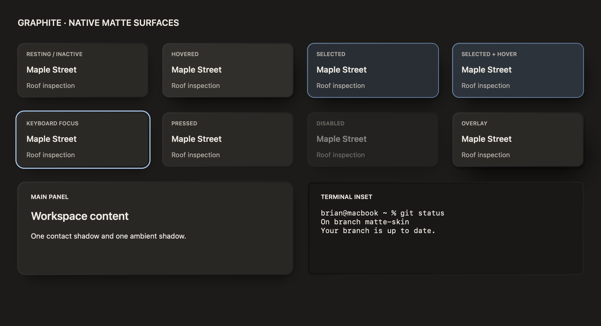
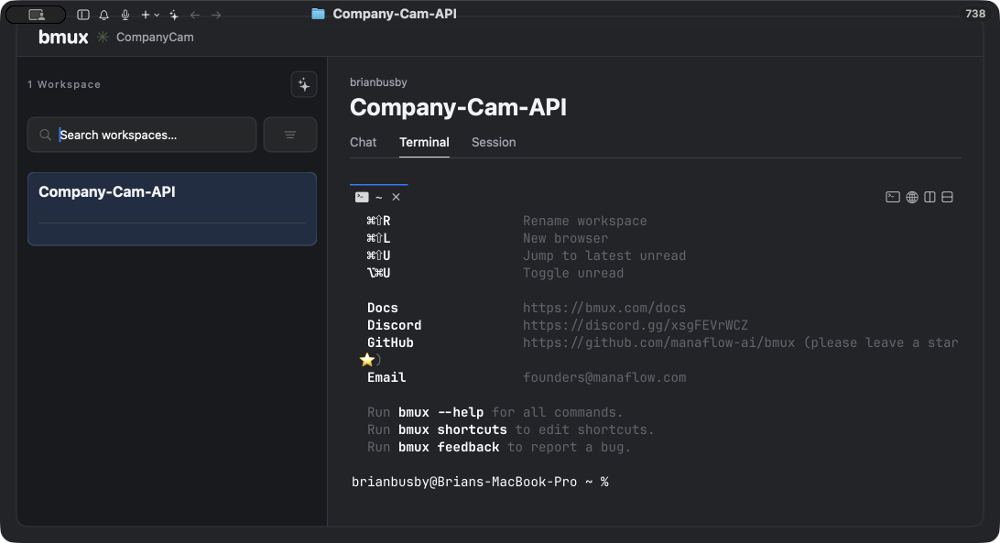
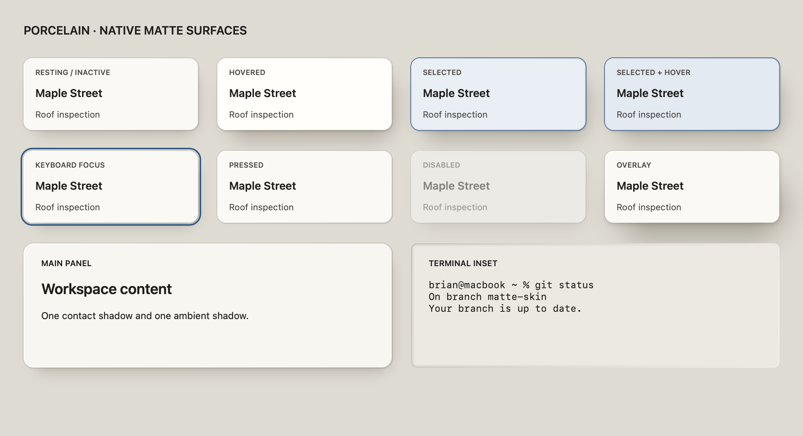
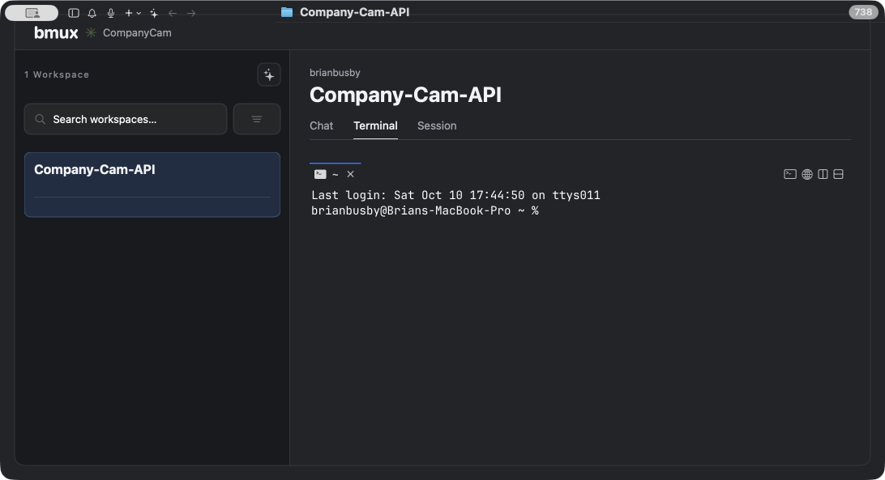

Material previews use the production SwiftUI surface styles, texture off. Gallery composition and labels are diagnostic; component integration and interaction remain stages 3–4. Scroll horizontally for side-by-side comparison at 1:1 points.
Native shadow radius is half the CSS blur; negative spread contracts the caster. Inner edges use gradient strokes. Native shadow kernels and inset falloff approximate CSS; geometry, colors and elevation ingredients follow the spec. See implementation record for all remaining deviations.




